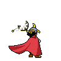

-
Luffy #001
- Akuma no Mi
- Lutador
Luffy Chapéu de Palha. Capitão dos chapéus de palha e usuário da fruta de borracha. Luffy sonha em ser o rei dos piratas.
-
Zoro #002

- Espadachim
Zoro, o Caçador de Piratas. O objetivo de Zoro é ser o melhor espadachim do mundo.
-
Sanji #003

- Lutador
Sanji Perna Preta. O cozinheiro da tripulação, Sanji, tem o sonho de chegar em All Blue, um mar onde se encontra todas as espécies de peixes do mundo.
-
Usopp #004
- Atirador
Usopp (Sogeking). Conhecido por suas histórias exageradas (para não dizer mentirosas), Usopp sonha em se tornar um corajoso pirata.
-
Chopper #005
- Akuma no Mi
- Lutador
Tony Tony Chopper. Médico da tripulação dos chapéus de palha, Chopper tem a intenção de salvar o máximo de pessoas possíveis com sua medicina.
-
Brook #006

- Akuma no Mi
- Espadachim
Brook, o Puro Osso. Amaldiçoado pela fruta da ressureição, Brook viu toda sua antiga tripulaçao morrer e voltou a vida após a morte, se juntou com os chapéus de palha e jurou voltar para encontrar Laboon.